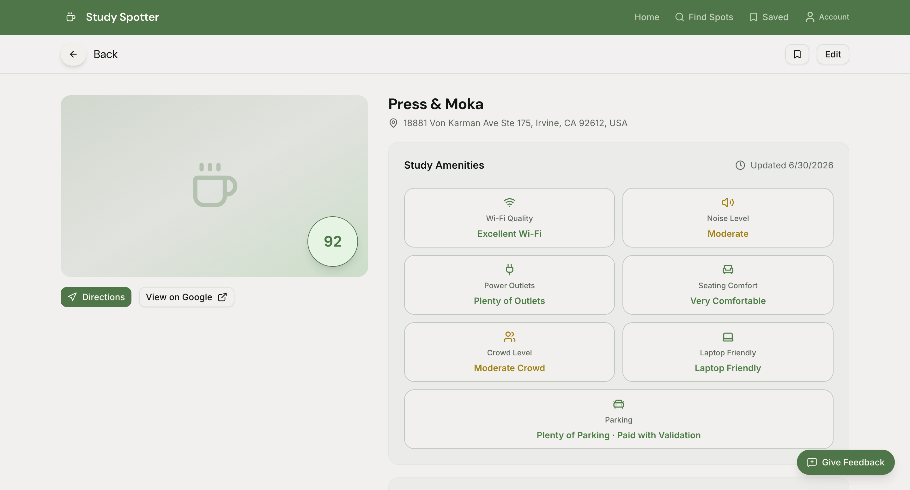

StudySpotter
StudySpotter helps students and professionals discover study-friendly cafes by city, compare amenities, and quickly pick the best option for their needs.


1 / 2
Highlights
- Search and filter locations by city and preferences.
- Clean map/list workflow designed for quick decisions.
- Responsive UI focused on accessibility and speed.
Stack
Next.js, TypeScript, Next.js, Supabase, PostgreSQL